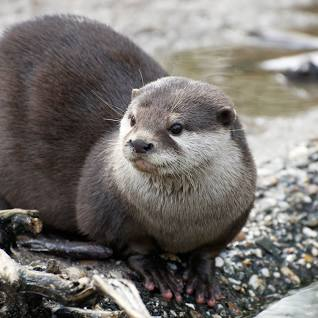

These are some of ther park's inhibitants

Otter
Otters are carnivorous mammals in the subfamily Lutrinae. The 13 extant otter species are all semiaquatic, aquatic, or marine, with diets based on fish and invertebrates. Lutrinae is a branch of the Mustelidae family, which also includes weasels, badgers, mink, and wolverines, among other animals. Wikipedia
Griffon Vulture
Otters are carnivorous mammals in the subfamily Lutrinae. The 13 extant otter species are all semiaquatic, aquatic, or marine, with diets based on fish and invertebrates. Lutrinae is a branch of the Mustelidae family, which also includes weasels, badgers, mink, and wolverines, among other animals. Wikipedia
Genet
Otters are carnivorous mammals in the subfamily Lutrinae. The 13 extant otter species are all semiaquatic, aquatic, or marine, with diets based on fish and invertebrates. Lutrinae is a branch of the Mustelidae family, which also includes weasels, badgers, mink, and wolverines, among other animals. Wikipedia